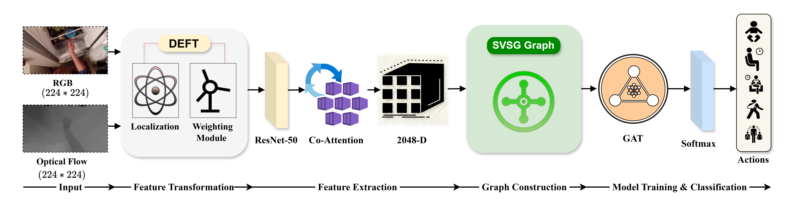

Qualitative Results
Localizing hand–object interactions


Abstract
Egocentric video captures human actions from a first-person perspective rich in visual and motion cues. Existing approaches often fail to effectively leverage complementary information across RGB, motion, and depth modalities, and even when cues are fused they typically lack adaptive integration, accurate localization, and scalability for large datasets. We introduce the Dynamic Egocentric Feature Transformation (DEFT) module, which adaptively encodes features while preserving the distinctive motion and viewpoint characteristics of egocentric video. DEFT emphasizes central and action-relevant regions through spatial alignment and Gaussian-based weighting, enabling precise action localization and robust recognition. A lightweight Co-Attention module fuses complementary modality features through cross-modal agreement. We then construct a Sparse Video Similarity Graph (SVSG) in the ResNet-50 deep feature space, where central frame regions serve as graph nodes, and apply Dynamic Percentile Thresholding (DPT) to retain only the most informative edges. The resulting sparse graph is processed by a Graph Attention Network (GAT) for context-aware learning and classification. With only 34.21M parameters, the framework achieves 46.25% lower computation time than large-scale pretrained foundation models while maintaining competitive accuracy across EPIC-Kitchens, MECCANO, GTEA, and ADL.
Method Overview
A Spatial Transformer Network predicts per-frame affine parameters to align hand–object regions, while a Gaussian weighting module follows the transformed peak to attend off-center interactions. Optimized with a multi-task alignment, regularization, and weighting loss.
STN + Gaussian priorResNet-50 extracts a 2048-D descriptor per modality. A scalar cross-modal agreement coefficient adaptively reweights RGB and optical-flow streams via residual updates, then projects the concatenation back to 2048-D.
cross-modal agreementFrames become graph nodes with cosine-similarity edges. Dynamic Percentile Thresholding keeps only edges above a data-driven percentile, yielding a sparse yet semantically coherent graph that scales to long sequences.
retains 0.69–5.53% of edgesA two-layer GAT with multi-head attention propagates context across the sparse graph, adaptively weighting neighbors to capture spatiotemporal dependencies and predict a per-node action label.
attention-based message passingQualitative Results
Results
Paper & Citation